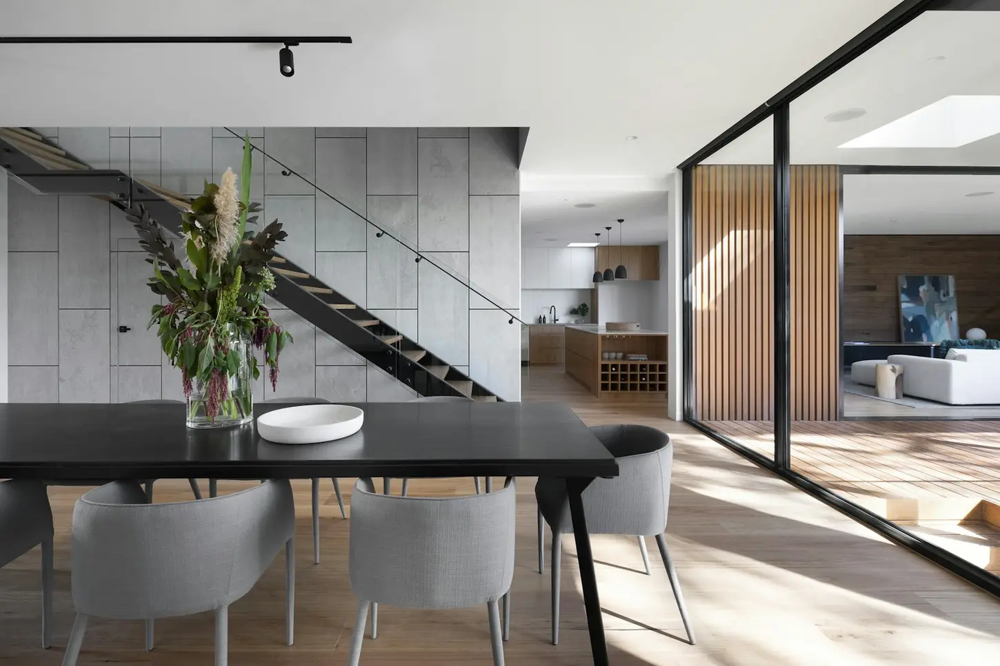
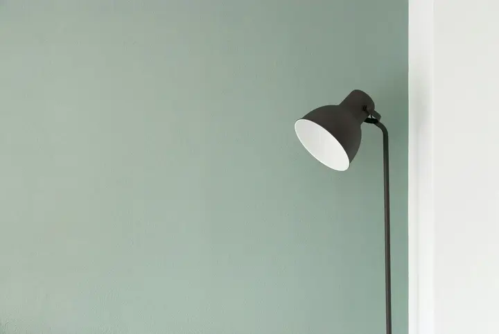

Смета по позициям
Отдельно видны материалы, фурнитура, доставка и монтаж.
Мастерская корпусной мебели
Кухни, шкафы и системы хранения по размерам вашего дома. От первого эскиза до установки.
Получить расчёт
Что изготавливаем
Подход мастерской
Где лежит утренняя кружка? Что нужно спрятать в прихожей? Ответы помогают выбрать пропорции, механизмы и материалы, которыми удобно пользоваться каждый день.
Предварительный расчёт
Четыре шага — и у мастера будет достаточно информации для первого разговора.

О мастерской
Показываем, как будет устроена мебель изнутри, до начала производства. На проекте видны стыки, проходы и открывание каждого фасада.
Портфолио
Условия работы
Отдельно видны материалы, фурнитура, доставка и монтаж.
Согласуем календарь производства и день установки.
Проверяем фасады, ящики и крепления вместе с вами.
Этапы
Записываем размеры и особенности помещения.
Утверждаем компоновку, образцы и смету.
Готовим детали и проверяем комплектацию.
Собираем мебель на месте и сдаём работу.
Обмер помещения
Обсудим помещение, ориентиры по бюджету и удобное время визита.
Отзывы · примеры для шаблона
«Наконец получилось использовать нишу в прихожей целиком».
«На эскизе сразу стало понятно, как будет открываться угол кухни».
«Заранее согласовали каждый оттенок, поэтому тумба подошла к стенам».
Частые вопросы
Да. Подойдёт рисунок, план комнаты или фотографии мебели, которая нравится.
После замера и выбора комплектации. Запуск в работу согласуем по утверждённой смете.
Освободите место установки и проход для крупных деталей. Особенности заноса обсудим заранее.
Да. Можем спроектировать одну тумбу, отдельный шкаф или комплект мебели для комнаты.
Контакты
Расскажите, для какой комнаты нужна мебель и когда планируете установку.
СЛОЙ — вымышленная мастерская. Контакты подключаются при установке шаблона.